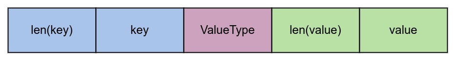
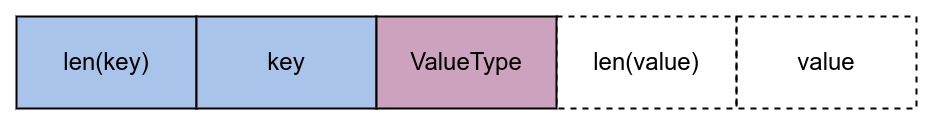

Ch04-LevelDB 之 MemTable
May 12, 2022
MemTable
1. Immutable VS Mutable #
本质上都是 MemTable，只是其定义的变量扮演的角色不同罢了，有点类似于 double buffer 的两个 buffer 之间的关系。
namespace leveldb {
class DBImpl : public DB {
public:
private:
MemTable* mem_;
MemTable* imm_ GUARDED_BY(mutex_);
}
}
2. 数据结构定义 #
// db/memtable.h
namespace leveldb {
class MemTable {
public:
void Add(SequenceNumber seq, ValueType type, const Slice& key, const Slice& value);
bool Get(const LookupKey& key, std::string* value, Status* s);
private:
KeyComparator comparator_;
typedef SkipList<const char*, KeyComparator> Table;
Table table_;
};
}
// db/skiplist.h
namespace leveldb {
template <typename Key, class Comparator>
class SkipList {
public:
void Insert(const Key& key);
bool Contains(const Key& key) const;
class Iterator {
void Next();
void Prev();
void Seek(const Key& target);
}
private:
Comparator const compare_;
Node* const head_;
};
template <typename Key, class Comparator>
struct SkipList<Key, Comparator>::Node {
Key const key;
Node* Next(int n)；
private:
std::atomic<Node*> next_[1];
}
3. 原理说明 #
本质上是对 SkipList 的再封装，所以它的 Add(...) 和 Get(...) 操作本质上就是对 SkipList 的操作。SkipList 的原理，这里不去详细说明，网上有很多，自行搜索便是。
4. 内存分配 #
借由 Arena 完成，且不会独自回收内存。
5. 构造说明 #
插入数据的时候，会首先将 key 和 value 编码成下述所示的字符串，再构造成 SkipList::Node 插入到 SkipList 中。写操作的核心部分由 SkipList::Insert(...) 完成。

读取数据的时候，Node 的 key 构造规则会略有不同，仅仅会构造前半部分，如下所示。读取操作的核心部分由 SkipList::Iterator::Seek(…) 完成。
